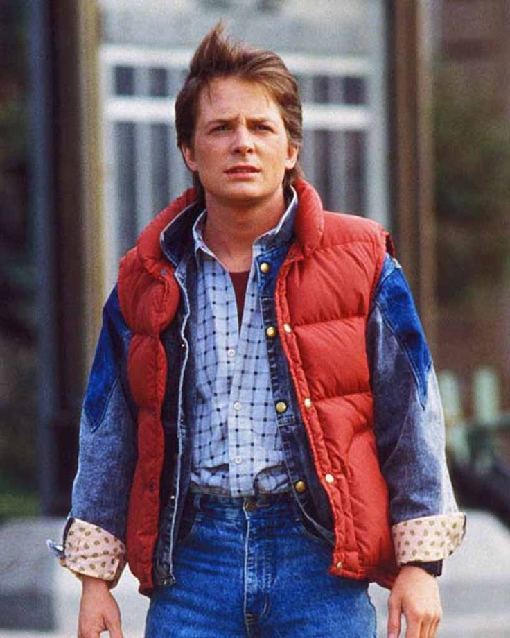

Это самый необычный, яркий, фантастический фильм, который должен посмотреть каждый
Название: Back to the Future (Назад в будущее)
Рейтинг: 8.6
Год: 1985
Страна: США
Актёры: Майкл Джей Фокс, Кристофер Ллойд, Лиа Томпсон, Криспин Гловер, Томас Ф. Уилсон, Клаудия Уэллс
Подросток Марти с помощью машины времени, сооружённой его другом‑профессором Доком Брауном, попадает из 80‑х в далёкие 50‑е. Там он встречается со своими будущими родителями, ещё подростками, и другом‑профессором, совсем молодым.
У фильма есть три части
| Часть фильма | Год выхода | Описание |
|---|---|---|
| Назад в будущее 1 | 1985 | Марти МакФлай случайно попадает в 1955 год и встречает своих родителей в юности. |
| Назад в будущее 2 | 1989 | Марти и Док отправляются в будущее, а затем в альтернативное настоящее. |
| Назад в будущее 3 | 1990 | Герои оказываются на Диком Западе, где Док влюбляется, а Марти пытается вернуть их домой. |
Главные герои:
Марти Макфлай (17-летний школьник из американской глубинки Хилл-Вэлли, катается на скейте, играет рок, опаздывает на занятия и обладает всеми признаками классического раздолбая)

Док Эммет Браун (гениальный ученый, потративший всё состояние семьи и 30 лет жизни на изобретение машины времени из автомобиля марки DeLorean. Он зовет Марти снять на видео начало первого в истории путешествия в будущее)

Дженнифер Паркер (воспитанная, интеллигентная девушка, которая никогда не опаздывает в школу. Она добра и тактична, всегда знает, как подбодрить Марти. Они начали встречаться в октябре 1985 года.)

Трейлер к фильму "Назад в Будущее" (первая часть)
Саунтреки из фильма "Назад в Будущее" (первая часть):